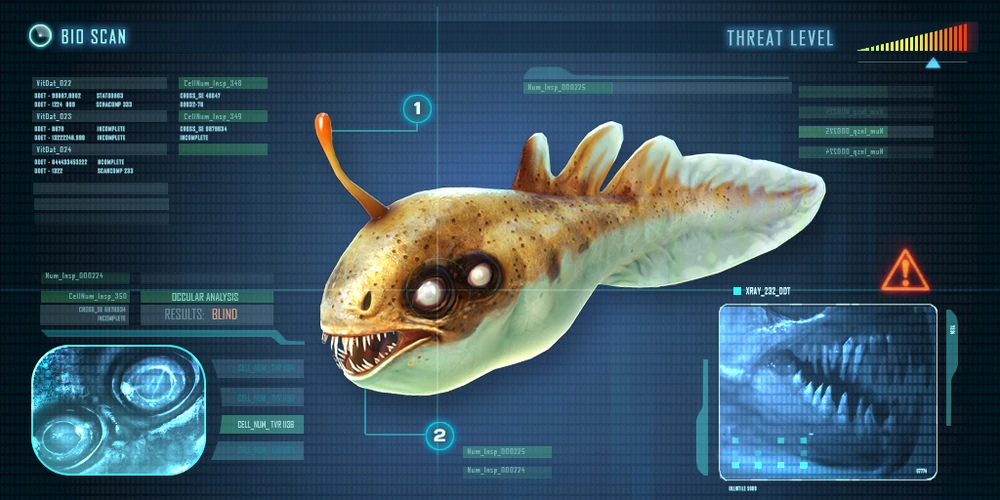

As Lamparinas são pequenos predadores, levemente rápidas e territoriais que eventualmente emitem sons de mordidas e rangidos (pode ser escutado clicando na imagem acima), essas criaturas atacam o jogador imediatamente quando bem próximas (possui curto alcance de ataque), e cada uma de suas mordidas causam 7 de dano.
Os mordedores assim como outras criaturas carnívoras comerá da mão do jogador caso um peixe (vivo ou morto) seja oferecido.
Essas criaturas optam por uma caça mais individual, não se juntando em grupos, além de ter um método de caça menos agressivo e mais próximo.
Essas criaturas comem cadáveres de qualquer peixe (incluindo de sua própria espécie), o que fará que o cadáveres suma rapidamente.
Possui uma versão alternativa de águas rasas conhecida como mordedor
Registro do banco de dados:

O seu registro no PDA consta que sua necessária proximidade para mordida, e lenta caça provavelmente é resultado de sua cegueira.
Sua estrutura corporal possui:
Caule Olfativo
Enquanto sua versão não adaptada para águas profundas possuía uma antena para localização e perseguição, a Lamparina utiliza seu caule olfativo não para perseguir, mas sim para atrair a presa, que quando se aproxima muito, é devorada pela Lamparina
Arcada dentária
Uma fileira de dentes afiados e penetrantes é tudo o que a Lamparina precisa para dilacerar suas presas.
Olhos Cegos
Esta criatura encontrou pouca utilidade para os olhos nas cavernas profundas e escuras que habita, e seus olhos provavelmente são sensíveis apenas à grandes flutuações nas fontes de luz locais (por exemplo, quando uma presa cruza seu caminho).
Dados relevantes
Os mordedores possuem comportamento catémero, ou seja, são ativos durante o dia e noite.